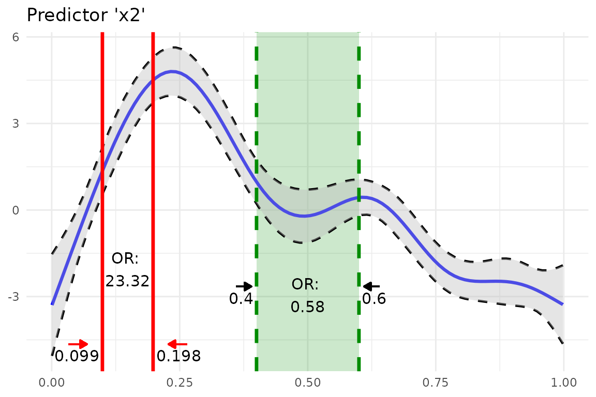

GAM Example
Calculating Odds Ratio for Static Increases of a Continuous Variable
In this example we take predictor x2 (randomly chosen).
First we define start and stop values via values.
or_gam(
data = data_gam, model = fit_gam, pred = "x2",
values = c(0.099, 0.198)
)
#> predictor value1 value2 oddsratio CI_low (2.5%) CI_high (97.5%)
#> 1 x2 0.099 0.198 23.32353 23.30424 23.34283Inspecting the plot we see that the odds of response y
happening are 22 times higher when predictor x2 increases
from 0.099 to 0.198, while holding all other predictors constant.
The detailed steps are
- Set all predictors to their mean value
- Predict the response,
- Change the selected predictor to a new value and predict the response again.
This result in two “log odds” values, which are subsequently transformed into “odds”. Finally, the odds ratio can be calculated from these two odds values.
Odds ratio for Discrete Variables
or_gam() is able to handle factor variables. The levels
which should be be compared need to be passed to
values.
or_gam(
data = data_gam, model = fit_gam,
pred = "x4", values = c("A", "B")
)
#> predictor value1 value2 oddsratio CI_low (2.5%) CI_high (97.5%)
#> 1 x4 A B 1.377537 1.334837 1.421604Here, the change in odds of y happening if predictor
x4 is changing from level A to B
is rather small: an increase in odds of 37.8% can be observed.
Odds ratio for Percentage increases of a Continuous Variables
To get an impression of odds ratio changes throughout the complete range of the smoothing function of the fitted GAM model for a specific predictor, odds ratios based on percentage steps of the predictors distribution.
Here we slice predictor x2 into five parts by extracting
the predictor values in 20% steps.
or_gam(
data = data_gam, model = fit_gam, pred = "x2",
percentage = 20, slice = TRUE
)
#> predictor value1 value2 perc1 perc2 oddsratio CI_low (2.5%) CI_high (97.5%)
#> 1 x2 0.001 0.200 0 20 2510.77 1091.68 5774.53
#> 2 x2 0.200 0.400 20 40 0.03 0.03 0.03
#> 3 x2 0.400 0.599 40 60 0.58 0.56 0.60
#> 4 x2 0.599 0.799 60 80 0.06 0.06 0.06
#> 5 x2 0.799 0.998 80 100 0.41 0.75 0.22We can see that there is a high odds ratio reported when increasing
predictor x2 from 0.008 to 0.206 while all further
predictor increases decrease the odds of response y
happening substantially.
Plot GAM(M) Smoothing Functions
plot_gam() helps to simplify the plotting of GAM
smoothing functions in R:
library(ggplot2)
plot_gam(fit_gam, pred = "x2", title = "Predictor 'x2'") +
theme_minimal()You can further customize the look using other colors or line types.
Besides making use of the implemented arguments of the function, you can
save the result of plot_gam() to an object and add more
ggplot2 calls afterwards.
Add Odds Ratio Information Into Smoothing Function Plot
So far we computed the odds ratios and created a plot of a GAM
smoothing function. Why not combine both? This is what
insert_or()aims at. It takes
-
ggplotplotting object containing the smooth function and - a [data.frame] returned from
or_gam()containing information about the predictor and the respective values that should be inserted.
plot_object <- plot_gam(fit_gam, pred = "x2", title = "Predictor 'x2'")
or_object <- or_gam(
data = data_gam, model = fit_gam,
pred = "x2", values = c(0.099, 0.198)
)
plot <- insert_or(plot_object, or_object,
or_yloc = 3,
values_xloc = 0.05, arrow_length = 0.02,
arrow_col = "red"
)
plot +
theme_minimal()The odds ratio information is always centered between the two
vertical lines. Hence it only looks nice if the gap between the two
chosen values (here 0.099 and 0.198) is large enough. If the smoothing
line crosses the inserted text, you can correct it by adjusting
or_yloc. This argument sets the y-location of the inserted
odds ratio information.
Depending on the digits of your chosen values (here 3), you might also need to adjust the x-axis location of the two values so that they do not interfere with the vertical line.
Let’s do all of this by inserting another odds ratio result into this
plot. This time we simply take the already produced plot as an input to
insert_or() and use a new odds ratio result:
or_object2 <- or_gam(
data = data_gam, model = fit_gam,
pred = "x2", values = c(0.4, 0.6)
)
insert_or(plot, or_object2,
or_yloc = 2.1, values_yloc = 2,
line_col = "green4", text_col = "black",
rect_col = "green4", rect_alpha = 0.2,
line_alpha = 1, line_type = "dashed",
arrow_xloc_r = 0.01, arrow_xloc_l = -0.01,
arrow_length = 0.02, rect = TRUE
) +
theme_minimal()
Using rect = TRUE, you can additionally highlight
certain odds ratio intervals. Aesthetics like opacity or color are fully
customizable.
GLM Example
Fit model.
fit_glm <- glm(admit ~ gre + gpa + rank, data = data_glm, family = "binomial")Odds Ratio for Continuous Predictors
For GLMs, the odds ratio calculation is simpler because odds ratio changes correspond to static predictor increases throughout the complete value range of each predictor
Hence, [or_glm()] takes the increment steps of each predictor
directly as an input via argument incr. To avoid false
predictor/value assignments, the combinations need to be given in a
named list. Odds ratios of indicator variables are computed
automatically and always refer to the base factor level.
The indicator predictor rank in this example dataset has
four levels. Subsequently, we will get three odds ratio outputs
referring to the base factor level (here: rank1)
The output can be interpreted as follows: “Given rank2
instead of rank1 while holding all other values constant
results in a decrease in odds of 49.1% (1-0.509)”.
or_glm(data = data_glm, model = fit_glm, incr = list(gre = 380, gpa = 5))
#> predictor oddsratio ci_low (2.5) ci_high (97.5) increment
#> 1 gre 2.364 1.054 5.396 380
#> 2 gpa 55.712 2.229 1511.282 5
#> 3 rank2 0.509 0.272 0.945 Indicator variable
#> 4 rank3 0.262 0.132 0.512 Indicator variable
#> 5 rank4 0.212 0.091 0.471 Indicator variableYou can also set other confident intervals for GLM(M) models. The resulting [data.frame] will automatically adjust the column names to the specified level.
or_glm(
data = data_glm, model = fit_glm,
incr = list(gre = 380, gpa = 5), ci = 0.70
)
#> predictor oddsratio ci_low (15) ci_high (85) increment
#> 1 gre 2.364 1.540 3.647 380
#> 2 gpa 55.712 10.084 314.933 5
#> 3 rank2 0.509 0.366 0.706 Indicator variable
#> 4 rank3 0.262 0.183 0.374 Indicator variable
#> 5 rank4 0.212 0.136 0.325 Indicator variable